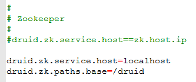
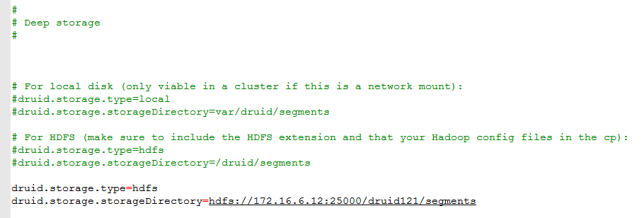
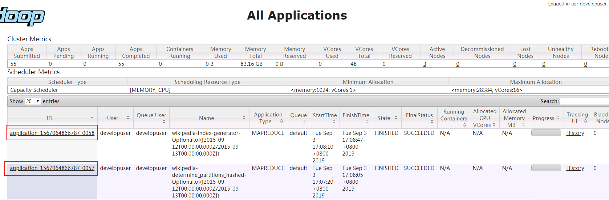
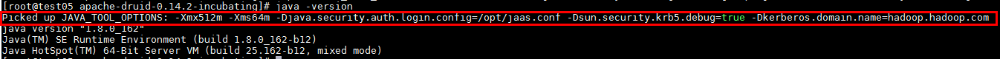
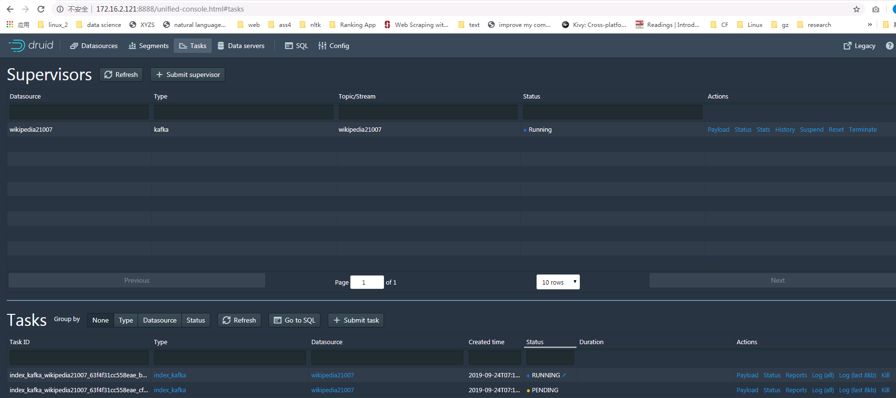

Apache Druid 0.14.2 对接FusionInsight¶
适用场景¶
Apache Druid 0.14.2 ↔ FusionInsight HD V100R002C80SPC200 (HDFS/Kafka)
前提条件¶
- 已完成FusionInsight集群的部署，版本FusionInsight HD 2.8
环境描述¶
FI HD主机三台： 172.16.6.10 - 12
Druid部署主机： 172.16.2.121
准备工作¶
FI HD集群相关准备¶
-
参考产品文档完成FI HD客户端的安装
-
下载准备好的用户developuser相关的user.keytab以及krb5.conf文件
安装MySQL¶
-
Druid 的元数据需要存储，本文选用自己搭建的MySQL数据库，下面介绍如何安装MySQL数据库
-
登录 https://downloads.mysql.com/archives/community/， 在 Product Version 中选择 5.7.27，Operating System请选择Linux-Generic，下载社区版MySQL软件包。
-
以root用户登录待安装的服务器
-
上传软件包并解压。
- 以root用户通过sftp/ftp工具上传“mysql-5.7.24-linux-glibc2.12-x86_64.tar.gz”软件包到“/opt”目录 。
- 进入opt目录，并解压缩软件包。
cd /opt/ tar -xzvf mysql-5.7.27-linux-glibc2.12-x86_64.tar.gz
-
将解压后目录改名为mysql。
mv mysql-5.7.27-linux-glibc2.12-x86_64 mysql
-
创建用户和用户组，并进行授权。
- 添加mysql组。
groupadd mysql
- 添加mysql用户。
useradd -d /home/mysql -s /bin/bash -g mysql -m mysql
- 把mysql目录授权给mysql用户。
chown -R mysql:mysql /opt/mysql
- 在数据盘目录下（如/data01），创建mysql-data目录及子目录tmp。
mkdir /opt/mysql-data mkdir /opt/mysql-data/tmp mkdir /opt/mysql-data/log
- 把mysql-data目录及子目录授权给mysql组中的mysql用户。
chown -R mysql:mysql /opt/mysql-data
-
mysql-data目录的所属群组修改为mysql。
chgrp -R mysql /opt/mysql-data
-
新建并编辑my.cnf文件。
-
在mysql目录下新建并编辑my.cnf文件。
vi /opt/mysql/my.cnf
输入i进入编辑模式，按如下要求修改文件内容，修改完成后按Esc退出编辑模式，执行:wq!保存并退出。其中，“bind-address”参数请修改为MySQL服务器的地址。
[mysqld] basedir = /opt/mysql bind-address = 172.16.2.121 datadir = /opt/mysql-data/workdbs tmpdir = /opt/mysql-data/tmp/ port = 3306 socket =/opt/mysql/lib/mysql.sock lower_case_table_names=1 character-set-server = utf8 max_allowed_packet = 150M sql_mode=NO_ENGINE_SUBSTITUTION,STRICT_TRANS_TABLES,STRICT_ALL_TABLES log-error=/opt/mysql-data/log/mysql_3306.log max_connections=1000 event_scheduler=ON [mysql] default-character-set = utf8 socket =/opt/mysql/lib/mysql.sock
-
执行如下命令，修改my.cnf文件的属主。
chown mysql:mysql /opt/mysql/my.cnf
-
拷贝my.cnf文件到etc目录下。
cp -fr /opt/mysql/my.cnf /etc/my.cnf
-
修改系统配置文件profile。
-
编辑etc目录下的“profile”文件。
vi /etc/profile
-
输入i进入编辑模式，在文件末尾添加如下内容：
export PATH=$PATH:/opt/mysql/bin export PATH=$PATH:/etc/init.d添加完成后按Esc退出编辑模式，执行:wq!保存并退出。
-
重新加载etc目录下的profile文件。
source /etc/profile
-
将mysql.server复制到/etc/init.d/ 。
cd /opt/mysql cp -a ./support-files/mysql.server /etc/init.d/mysql.server
-
初始化mysql
命令执行后，如无错误，不会有显示信息，查看日志文件“/opt/mysql-data/log/mysql_3306.log”，获取临时密码。cd /opt/mysql ./bin/mysqld --initialize --user=mysql --basedir=/opt/mysql/ --datadir=/opt/mysql-data/workdbs
cat /data01/mysql-data/log/mysql_3306.log

-
创建软连接。
-
将mysql的安装目录软连接到local下面。
ln -s /opt/mysql /usr/local/mysql
-
将mysql.sock文件软连接到tmp下面
ln -s /opt/mysql/lib/mysql.sock /tmp/mysql.sock
-
注册并设置mysql.server服务为开机自启动。
systemctl enable mysql.server.service
-
查看MySQL状态。
mysql.server status
-
在
opt/mysql/bin目录下执行以下命令登录MySQL。按照提示信息输入记录的临时密码。cd /opt/mysql/bin mysql -u root -p
Enter Password：登录成功后系统显示如下类似信息：
- 修改root用户密码。
mysql> set password=password('Password');
其中，单引号中的Password由用户自定义。
-
赋予任何主机访问数据的权限。
其中，单引号中的Password由用户自定义。mysql> grant all privileges on *.* to 'root'@'%' identified by 'Password' with grant option;
-
使修改生效并使用数据库。
mysql> flush privileges; mysql> use mysql;
-
使用如下命令创建druid元数据存储的database
mysql -u root -e "CREATE DATABASE druid CHARACTER SET utf8 COLLATE utf8_general_ci" -p -
完成安装，部署，退出MySQL数据库。
mysql> exit
安装，部署Druid¶
- 登录如下网址选择相关Druid版本下载： https://druid.apache.org/downloads.html

- 上传软件包到/opt/druid目录下

tar -xvf apache-druid-0.14.2-incubating-bin.tar.gz 解压安装包

-
Druid 需要使用zookeeper服务作为自己本身distributed coordination服务的依赖，所以在使用druid之前需要提前部署zookeeper服务，本文使用开源zookeeper服务作为druid的依赖，而不使用FI HD本真的zookeeper服务
-
登录druid安装目录
cd /opt/druid/apache-druid-0.14.2-incubating -
下载开源的zookeeper，并且改名为zk
curl https://archive.apache.org/dist/zookeeper/zookeeper-3.4.11/zookeeper-3.4.11.tar.gz -o zookeeper-3.4.11.tar.gz tar -xzf zookeeper-3.4.11.tar.gz mv zookeeper-3.4.11 zk

-
加载FI HD客户端环境
source /opt/hadoopclient/bigdata_env
检查druid安装主机同集群时间小于5分钟
- 使用如下命令启动druid
bin/supervise -c quickstart/tutorial/conf/tutorial-cluster.conf

待全部服务启动后，登录172.16.2.121:8888 web界面查看druid

完成后 Ctrl+C 停止druid
配置druid对接FI HD集群¶
说明： 参考Druid官方文档，配置FI HD集群的HDFS服务为Druid的Deep Storage,并且使用FI HD的yarn服务以及Mapreduce服务来批量将存储在HDFS上的数据导入Druid数据库
Deep Storage相关文档连接： https://druid.apache.org/docs/latest/development/extensions-core/hdfs.html
Hadoop批处理数据导入相关文档连接：https://druid.apache.org/docs/latest/ingestion/hadoop.html
-
从FI HD集群客户端中获取到配置文件core-site.xml， hdfs-site.xml， mapred-site.xml， yarn-site.xml，做如下修改：
-
core-site.xml:
将默认配置项
<property> <name>fs.defaultFS</name> <value>hdfs://hacluster</value> </property>
更改为主Namenode节点IP + 端口形式：
<property> <name>fs.defaultFS</name> <value>hdfs://172.16.6.12:25000</value> </property>
-
hdfs-site.xml:
删除如下这个配置项
<property> <name>dfs.client.failover.proxy.provider.hacluster</name> <value>org.apache.hadoop.hdfs.server.namenode.ha.BlackListingFailoverProxyProvider</value> </property>
-
将上面步骤的core-site.xml， hdfs-site.xml， mapred-site.xml， yarn-site.xml配置文件拷贝到druid如下两个路径下：
/opt/druid/apache-druid-0.14.2-incubating/conf/druid/_common-
/opt/druid/apache-druid-0.14.2-incubating/quickstart/tutorial/conf/druid/_common -
修改druid配置文件
/opt/druid/apache-druid-0.14.2-incubating/conf/druid/_common/common.runtime.properties -
增加
druid.extensions.loadList=["druid-hdfs-storage", "mysql-metadata-storage"]
-
修改zookeeper配置项如下：
druid.zk.service.host=localhost druid.zk.paths.base=/druid

-
Druid元数据存储改为之前配置好的MySQL数据库

-
配置hdfs Deep Storage相关参数：
druid.storage.type=hdfs druid.storage.storageDirectory=hdfs://172.16.6.12:25000/druid121/segments

-
配置hadoop indexer以及kerberos认证相关参数：
druid.indexer.logs.type=hdfs druid.indexer.logs.directory=hdfs://172.16.6.12:25000/druid121/indexing-logs druid.hadoop.security.kerberos.principal=developuser@HADOOP.COM druid.hadoop.security.kerberos.keytab=/opt/101hdclient/user.keytab

其中developuser为集群创建的用户，user.keytab为下载的developuser认证文件
-
将上述步骤修改后的common.runtime.properties文件拷贝到
/opt/druid/apache-druid-0.14.2-incubating/quickstart/tutorial/conf/druid/_common路径下 -
将下载的krb5.conf文件拷贝到druid服务器
/etc/路径下（默认在此路径下读取krb5.conf文件）
cp /opt/user_keytabs/101keytab/krb5.conf /etc
- 登录
/opt/druid/apache-druid-0.14.2-incubating/extensions/mysql-metadata-storage路径，导入mysql连接驱动 mysql-connector-java-5.1.48.jar， 驱动jar包可在mysql官方网站获取

- 登录druid extension路径下找到druid-hdfs-storage依赖路径，改名备份
cd /opt/druid/apache-druid-0.14.2-incubating/extensions mv druid-hdfs-storage/ druid-hdfs-storage-backup/
- 另行创建druid-hdfs-storage文件夹，从FI HD下载客户端， druid-hdfs-storage自带的jar包中收集并导入如下依赖jar包：
注：hdfs相关jar包一定是从FI HD下载的客户端中获取
apacheds-i18n-2.0.0-M15.jar apacheds-kerberos-codec-2.0.0-M15.jar api-asn1-api-1.0.0-M20.jar api-util-1.0.0-M20.jar asm-3.2.jar commons-beanutils-1.7.0.jar commons-beanutils-core-1.8.0.jar commons-cli-1.2.jar commons-codec-1.4.jar commons-collections-3.2.2.jar commons-compress-1.16.jar commons-configuration-1.6.jar commons-daemon-1.0.13.jar commons-digester-1.8.jar commons-io-2.4.jar commons-lang-2.6.jar commons-logging-1.1.3.jar commons-net-3.1.jar core.jar curator-framework-4.1.0.jar curator-recipes-4.1.0.jar druid-hdfs-storage-0.14.2-incubating.jar dynalogger-V100R002C30.jar gson-2.2.4.jar guava-11.0.2.jar hadoop-annotations-2.7.2.jar hadoop-auth-2.7.2.jar hadoop-client-2.7.2.jar hadoop-common-2.7.2.jar hadoop-hdfs-2.7.2.jar hadoop-hdfs-client-2.7.2.jar hadoop-hdfs-colocation-2.7.2.jar hadoop-hdfs-datamovement-2.7.2.jar hadoop-hdfs-nfs-2.7.2.jar hadoop-mapreduce-client-app-2.7.2.jar hadoop-mapreduce-client-common-2.7.2.jar hadoop-mapreduce-client-core-2.7.2.jar hadoop-mapreduce-client-jobclient-2.7.2.jar hadoop-mapreduce-client-shuffle-2.7.2.jar hadoop-yarn-api-2.7.2.jar hadoop-yarn-client-2.7.2.jar hadoop-yarn-common-2.7.2.jar hadoop-yarn-server-common-2.7.2.jar hdfs-inode-provider-2.7.2.jar hdfs-nodelabel-provider-2.7.2.jar htrace-core-3.1.0-incubating.jar htrace-core4-4.0.1-incubating.jar jackson-core-asl-1.9.13.jar jackson-jaxrs-1.9.13.jar jackson-mapper-asl-1.9.13.jar jackson-xc-1.9.13.jar javaluator-3.0.1.jar jaxb-api-2.2.2.jar jcip-annotations-1.0.jar jersey-client-1.9.jar jetty-6.1.26.jar jetty-sslengine-6.1.26.jar jetty-util-6.1.26.jar json-smart-1.1.1.jar jsp-api-2.1.jar jsr305-3.0.0.jar leveldbjni-all-1.8.jar log4j-1.2.17.jar netty-3.6.2.Final.jar netty-all-4.0.23.Final.jar nimbus-jose-jwt-3.9.jar objenesis-2.6.jar okhttp-2.4.0.jar okio-1.4.0.jar protobuf-java-2.5.0.jar rt.jar servlet-api-2.5.jar stax-api-1.0-2.jar xercesImpl-2.9.1.jar xml-apis-1.3.04.jar xmlenc-0.52.jar
- 登录
/opt/druid/apache-druid-0.14.2-incubating/hadoop-dependencies/hadoop-client路径下，创建路径2.7.2
cd /opt/druid/apache-druid-0.14.2-incubating/hadoop-dependencies/hadoop-client mkdir 2.7.2

按照如下列表准备2.7.2路径下的依赖Jar包
asm-3.2.jar avro-1.7.4.jar commons-cli-1.2.jar commons-codec-1.4.jar commons-daemon-1.0.13.jar commons-io-2.4.jar commons-lang-2.6.jar commons-logging-1.1.3.jar dynalogger-V100R002C30.jar guava-11.0.2.jar hadoop-annotations-2.7.2.jar hadoop-auth-2.7.2.jar hadoop-client-2.7.2.jar hadoop-common-2.7.2.jar hadoop-hdfs-2.7.2.jar hadoop-hdfs-client-2.7.2.jar hadoop-hdfs-colocation-2.7.2.jar hadoop-hdfs-datamovement-2.7.2.jar hadoop-hdfs-nfs-2.7.2.jar hadoop-mapreduce-client-app-2.7.2.jar hadoop-mapreduce-client-common-2.7.2.jar hadoop-mapreduce-client-core-2.7.2.jar hadoop-mapreduce-client-jobclient-2.7.2.jar hadoop-mapreduce-client-shuffle-2.7.2.jar hadoop-yarn-api-2.7.2.jar hadoop-yarn-client-2.7.2.jar hadoop-yarn-common-2.7.2.jar hadoop-yarn-server-common-2.7.2.jar hdfs-inode-provider-2.7.2.jar hdfs-nodelabel-provider-2.7.2.jar htrace-core-3.1.0-incubating.jar jackson-core-asl-1.9.13.jar jackson-mapper-asl-1.9.13.jar javaluator-3.0.1.jar jersey-core-1.9.jar jersey-server-1.9.jar jetty-6.1.26.jar jetty-util-6.1.26.jar jsr305-3.0.0.jar leveldbjni-all-1.8.jar log4j-1.2.17.jar netty-3.6.2.Final.jar netty-all-4.0.23.Final.jar
- 创建druid需要的spec文件并放到druid目录下：wikipedia-index-hadoop.json
具体内容如下：
{
"type" : "index_hadoop",
"spec" : {
"dataSchema" : {
"dataSource" : "wikipedia",
"parser" : {
"type" : "hadoopyString",
"parseSpec" : {
"format" : "json",
"dimensionsSpec" : {
"dimensions" : [
"channel",
"cityName",
"comment",
"countryIsoCode",
"countryName",
"isAnonymous",
"isMinor",
"isNew",
"isRobot",
"isUnpatrolled",
"metroCode",
"namespace",
"page",
"regionIsoCode",
"regionName",
"user",
{ "name": "added", "type": "long" },
{ "name": "deleted", "type": "long" },
{ "name": "delta", "type": "long" }
]
},
"timestampSpec" : {
"format" : "auto",
"column" : "time"
}
}
},
"metricsSpec" : [],
"granularitySpec" : {
"type" : "uniform",
"segmentGranularity" : "day",
"queryGranularity" : "none",
"intervals" : ["2015-09-12/2015-09-13"],
"rollup" : false
}
},
"ioConfig" : {
"type" : "hadoop",
"inputSpec" : {
"type" : "static",
"paths" : "/data/wikiticker-2015-09-12-sampled.json.gz"
}
},
"tuningConfig" : {
"type" : "hadoop",
"partitionsSpec" : {
"type" : "hashed",
"targetPartitionSize" : 5000000
},
"forceExtendableShardSpecs" : true,
"jobProperties" : {
"fs.default.name" : "hdfs://172.16.6.12:25000",
"fs.defaultFS" : "hdfs://172.16.6.12:25000",
"dfs.datanode.address" : "HD03",
"dfs.client.use.datanode.hostname" : "true",
"dfs.datanode.use.datanode.hostname" : "true",
"yarn.resourcemanager.hostname" : "HD03",
"yarn.nodemanager.vmem-check-enabled" : "false",
"mapreduce.map.java.opts" : "-Duser.timezone=UTC -Dfile.encoding=UTF-8",
"mapreduce.job.user.classpath.first" : "true",
"mapreduce.reduce.java.opts" : "-Duser.timezone=UTC+0800 -Dfile.encoding=UTF-8",
"mapreduce.map.memory.mb" : 1024,
"mapreduce.reduce.memory.mb" : 1024
}
}
},
"hadoopDependencyCoordinates": ["org.apache.hadoop:hadoop-client:2.7.2"]
}
- 登录FI HD集群,在HDFS的/data目录下传入数据文件 wikiticker-2015-09-12-sampled.json.gz， 该数据文件可以在
/opt/druid/apache-druid-0.14.2-incubating/quickstart/tutorial下获取

同时检查HDFS是否存在/druid121/indexing-logs以及/druid121/segments，若没有要创建好

- 使用命令
bin/supervise -c quickstart/tutorial/conf/tutorial-cluster.conf启动druid

待druid所有服务启动后，开启另一终端使用以下命令提交hadoop index作业，等待作业完成
bin/post-index-task -f /opt/druid/apache-druid-0.14.2-incubating/wikipedia-index-hadoop.json

- 登录对接FI HD集群yarn服务查看任务：
注：一次hadoop index作业会在yarn上起两个map reduce任务

- 登录druid web界面在Tasks面板下查看作业情况，日志：

在Datasources下点击Go to SQL使用命令查询导入的数据：

SELECT page, COUNT(*) AS Edits FROM wikipedia WHERE "__time" BETWEEN TIMESTAMP '2015-09-12 00:00:00' AND TIMESTAMP '2015-09-13 00:00:00' GROUP BY page ORDER BY Edits DESC LIMIT 10

配置druid对接FI HD集群Kafka普通模式¶
说明：参考Druid官方文档,使用druid的kafka index服务从kafka topic中导入流数据到druid中
参考文档：https://druid.apache.org/docs/latest/tutorials/tutorial-kafka.html
-
登陆对接集群的kafka客户端,使用命令
bin/kafka-topics.sh --create --zookeeper 172.16.6.10:24002,172.16.6.11:24002,172.16.6.12:24002/kafka --partitions 1 --replication-factor 1 --topic wikipedia21005创建topic wikipedia21005 -
登陆druid主机，修改
/opt/druid/apache-druid-0.14.2-incubating/conf/druid/_common/common.runtime.properties配置文件,增加druid-kafka-indexing-service

- 登陆druid主机，另外修改
/opt/druid/apache-druid-0.14.2-incubating/quickstart/tutorial/conf/druid/_common/common.runtime.properties配置文件,增加druid-kafka-indexing-service
- 登陆对接FI HD集群kafka客户端，在依赖库里找到对应的kafka client jar包，比如kafka-clients-0.11.0.1.jar，并把该jar包传到druid主机的
%Druid Home%/extensions/druid-kafka-indexing-service下，并且将该路径下已有的kafka client jar包通过加后缀.org的方式注销掉：

其中%Druid Home%为druid安装路径
-
重启druid
-
登陆druid的web ui界面 http://172.16.2.121:8888/ 点击Tasks找到Supervisor：


- 添加一个新的supervisor
输入的内容为
{
"type": "kafka",
"dataSchema": {
"dataSource": "wikipedia21005",
"parser": {
"type": "string",
"parseSpec": {
"format": "json",
"timestampSpec": {
"column": "time",
"format": "auto"
},
"dimensionsSpec": {
"dimensions": [
"channel",
"cityName",
"comment",
"countryIsoCode",
"countryName",
"isAnonymous",
"isMinor",
"isNew",
"isRobot",
"isUnpatrolled",
"metroCode",
"namespace",
"page",
"regionIsoCode",
"regionName",
"user",
{ "name": "added", "type": "long" },
{ "name": "deleted", "type": "long" },
{ "name": "delta", "type": "long" }
]
}
}
},
"metricsSpec" : [],
"granularitySpec": {
"type": "uniform",
"segmentGranularity": "DAY",
"queryGranularity": "NONE",
"rollup": false
}
},
"tuningConfig": {
"type": "kafka",
"reportParseExceptions": false
},
"ioConfig": {
"topic": "wikipedia21005",
"replicas": 2,
"taskDuration": "PT10M",
"completionTimeout": "PT20M",
"consumerProperties": {
"bootstrap.servers": "172.16.6.11:21005,172.16.6.12:21005,172.16.6.10:21005"
}
}
}


- 登陆对接集群的kafka客户端，把测试数据wikiticker-2015-09-12-sampled.json上传到kafka客户端的/opt路径下：

- 使用如下命令往topic wikipedia21005写入数据
cd /opt/hadoopclient/Kafka/kafka ./bin/kafka-console-producer.sh --broker-list 172.16.6.10:21005,172.16.6.11:21005,172.16.6.12:21005 --topic wikipedia21005 < /opt/wikiticker-2015-09-12-sampled.json --producer.config config/producer.properties

- 回到druid web ui

- 到druid datasource下检查结果：

- 点击Go to SQL使用命令查询导入的数据
SELECT page, COUNT(*) AS Edits FROM wikipedia21005 WHERE "__time" BETWEEN TIMESTAMP '2015-09-12 00:00:00' AND TIMESTAMP '2015-09-13 00:00:00' GROUP BY page ORDER BY Edits DESC LIMIT 10

- 切换回对接kafka客户端使用如下命令查看topic wikipedia21005里面的数据：
bin/kafka-console-consumer.sh --zookeeper 172.16.6.10:24002,172.16.6.11:24002,172.16.6.12:24002/kafka --topic wikipedia21005 --from-beginning

配置druid对接FI HD集群Kafka安全模式¶
说明：参考Druid官方文档,使用druid的kafka index服务从kafka topic中导入流数据到druid中
参考文档：https://druid.apache.org/docs/latest/tutorials/tutorial-kafka.html
-
登陆对接集群的kafka客户端,使用命令
bin/kafka-topics.sh --create --zookeeper 172.16.6.10:24002,172.16.6.11:24002,172.16.6.12:24002/kafka --partitions 1 --replication-factor 1 --topic wikipedia21007创建topic wikipedia21007 -
登陆druid主机，修改
/opt/druid/apache-druid-0.14.2-incubating/conf/druid/_common/common.runtime.properties配置文件,增加druid-kafka-indexing-service
- 登陆druid主机，另外修改
/opt/druid/apache-druid-0.14.2-incubating/quickstart/tutorial/conf/druid/_common/common.runtime.properties配置文件,增加druid-kafka-indexing-service
- 登陆对接FI HD集群kafka客户端，在依赖库里找到对应的kafka client jar包，比如kafka-clients-0.11.0.1.jar，并把该jar包传到druid主机的
%Druid Home%/extensions/druid-kafka-indexing-service下，并且将该路径下已有的kafka client jar包通过加后缀.org的方式注销掉：
其中%Druid Home%为druid安装路径
- 在druid主机/opt路径下新建jaas.conf配置文件，内容为：

-
将认证使用的krb5.conf文件拷贝并覆盖到druid主机的/etc路径下，druid默认从此路径读取krb5.conf文件
-
登陆druid的配置路径
/opt/druid/apache-druid-0.14.2-incubating/conf/druid

分别在broker,coordinator,historical,middleManager,overlord,router服务路径中的jvm.config文件中加入三条配置项
-Djava.security.auth.login.config=/opt/jaas.conf -Dsun.security.krb5.debug=true -Dkerberos.domain.name=hadoop.hadoop.com

- 登陆druid的配置路径
/opt/druid/apache-druid-0.14.2-incubating/quickstart/tutorial/conf/druid, 重复上述步骤分别在broker,coordinator,historical,middleManager,overlord,router服务路径中的jvm.config文件中加入三条配置项
-Djava.security.auth.login.config=/opt/jaas.conf -Dsun.security.krb5.debug=true -Dkerberos.domain.name=hadoop.hadoop.com
-
停止之前运行中的druid
-
使用命令
source /opt/hadoopclient/bigdata_env加载集群环境变量 -
使用命令
export JAVA_TOOL_OPTIONS="-Xmx512m -Xms64m -Djava.security.auth.login.config=/opt/jaas.conf -Dsun.security.krb5.debug=true -Dkerberos.domain.name=hadoop.hadoop.com"加载运行java整体jvm参数，完成后使用命令java -version查看结果：

-
重启druid
-
登陆druid的web ui界面 http://172.16.2.121:8888/ 点击Tasks找到Supervisor：
- 添加一个新的supervisor
输入的内容为
{
"type": "kafka",
"dataSchema": {
"dataSource": "wikipedia21007",
"parser": {
"type": "string",
"parseSpec": {
"format": "json",
"timestampSpec": {
"column": "time",
"format": "auto"
},
"dimensionsSpec": {
"dimensions": [
"channel",
"cityName",
"comment",
"countryIsoCode",
"countryName",
"isAnonymous",
"isMinor",
"isNew",
"isRobot",
"isUnpatrolled",
"metroCode",
"namespace",
"page",
"regionIsoCode",
"regionName",
"user",
{ "name": "added", "type": "long" },
{ "name": "deleted", "type": "long" },
{ "name": "delta", "type": "long" }
]
}
}
},
"metricsSpec" : [],
"granularitySpec": {
"type": "uniform",
"segmentGranularity": "DAY",
"queryGranularity": "NONE",
"rollup": false
}
},
"tuningConfig": {
"type": "kafka",
"reportParseExceptions": false
},
"ioConfig": {
"topic": "wikipedia21007",
"replicas": 2,
"taskDuration": "PT10M",
"completionTimeout": "PT20M",
"consumerProperties": {
"bootstrap.servers": "172.16.6.11:21007,172.16.6.12:21007,172.16.6.10:21007",
"kerberos.domain.name": "hadoop.hadoop.com",
"security.protocol": "SASL_PLAINTEXT",
"sasl.kerberos.service.name": "kafka"
}
}
}


- 后台登陆对接集群Kafka客户端，使用如下命令启动安全模式kafka producer
bin/kafka-console-producer.sh --broker-list 172.16.6.10:21007,172.16.6.11:21007,172.16.6.12:21007 --topic wikipedia21007 --producer.config config/producer.properties

插入一条数据，内容如下
{"time":"2015-09-12T05:22:32.338Z","channel":"#zh.wikipedia","cityName":null,"comment":"/* 成立 */","countryIsoCode":null,"countryName":null,"isAnonymous":false,"isMinor":false,"isNew":false,"isRobot":false,"isUnpatrolled":false,"metroCode":null,"namespace":"Main","page":"聖伯多祿司鐸兄弟會","regionIsoCode":null,"regionName":null,"user":"金肅","delta":675,"added":675,"deleted":0}

- 回到druid web ui

- 到druid datasource下检查结果

- 点击Go to SQL使用命令查询导入的数据
SELECT * FROM wikipedia21007